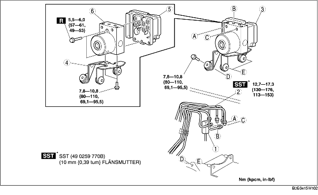

1. Demontera batteriet och batterihållaren. (Se DEMONTERING/MONTERING AV BATTERI [ZJ, Z6].) (Se DEMONTERING/MONTERING AV BATTERIET [LF].)
2. Vid vänsterstyrning, demontera reservslangen (fordon med manuell växellåda). (Se Observera vid demontering av reservslang.) (Se Observera vid demontering av kopplingsrör och kopplingens reservslang.) (Se Observera vid montering av reservslang.) (Se Observera vid montering av kopplingsrör och kopplingens reservslang.)
3. Demontera i den ordning som anges i tabellen.
4. Montera i omvänd ordning mot demonteringen.
5. Utför initieringen av kombinationsgivaren och givaren för bromsoljetryck. (Se ARBETSGÅNG FÖR INITIERING AV KOMBINATIONSGIVARE.) (Se INITIERING AV GIVARE FÖR BROMSOLJETRYCK.)
6. Rensa alla DTC-koder ur minnet. (Se Arbetsgång vid radering av felkoder.)

.
1. Sätt en markering på bromsröret och DSC HU/CM.
2. Sätt på skyddstejp på kontakten för att förhindra att bromsvätska tränger in.
3. Demontera bromsröret.
1. Flytta fästet i pilens riktning enligt figuren och demontera DSC HU/CM och fästet från karossen.
1. Placera markeringarna du gjorde före demonteringen mitt för varandra och montera bromsröret i DSC HU/CM enligt bilden.